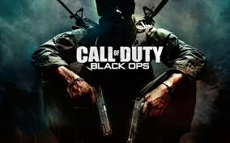
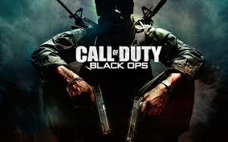

Call of Duty Black Ops 2
Release: November 12, 2012
Developer: Treyarch
Publisher: Activision
Engine IW engine
Platforms: Microsoft Windows, PS3, Xbox 360, Wii U
Call of Duty Black Ops 2
Call of Duty: Black Ops II is a first-person shooter video game, developed by Treyarch and published by Activision. It was released on November 13, 2012 for Microsoft Windows, PlayStation 3, and Xbox 360 and on November 18, 2012 in North America, November 30, 2012 in Europe and Australia for the Wii U.[4][5][6] Black Ops II is the ninth game in the Call of Duty franchise of video games, a sequel to the 2010 game Call of Duty: Black Ops and the first Call of Duty game for the Wii U. The game was launched at 16,000 stores worldwide at midnight on November 13, 2012. The game has been backwards compatible on the Xbox One since April 11, 2017.
Black Ops II is the first game in the Call of Duty franchise to feature future warfare technology and the first to present branching storylines driven by player choice as well as selecting weapons before starting story mode missions. It also offers a 3D display option.[9] A corresponding game, Call of Duty: Black Ops: Declassified, was released simultaneously on the PlayStation Vita. Within 24 hours of going on sale, the game grossed over $500 million.[10] It had remained the largest entertainment launch of all time until September 2013, when Take-Two announced that Grand Theft Auto V had grossed $800 million in its first day of release.[11] It went on to sell 7.5 million copies in the U.S. in November 2012, making it the highest grossing game of the month.
The game is the first in the series to feature significant elements of nonlinear gameplay, most notably multiple endings.[13] A sequel, Call of Duty: Black Ops III, was released in 2015.
Gameplay
Black Ops II is the first Call of Duty video game to feature branching storylines, in which the player's choice affects both the current mission and in turn, the overall course of the story. Known as "Strike Force missions", these branching storylines appear during the 2025 storyline and feature permanent death. The success or failure of these missions can have ramifications for the wider campaign storyline. Choosing one of the missions locks out the others unless the player begins a fresh campaign.
The player has a set of binoculars. While it is generally ignored during infantry-limited gameplay, it is vital to the long-range use of the Crusader tanks and one of the missions in which the player must direct artillery fire to defend a town. It is also important for scouting, though most of the game takes place in personal, close combat situations reducing the importance of this tactic.[9]
Strike Force missions allow the player to control a number of different war assets, such as unmanned aerial vehicles, jet fighters and robots. If the player dies in a Strike Force mission, the campaign continues recording that loss, as opposed to letting the player load a previously saved checkpoint. The player's progress in the Strike Force missions may go on to change even the plans of the story's antagonist, Raul Menendez.[15] By the end of the game, the player may have changed the results of the new Cold War.
Similarly, in the main story missions, there are certain points where the player is given different choices and paths to progress, which could have an effect on the gameplay, as well as the story. Black Ops II is also the first game in the series to allow the player to customize their loadout before beginning a mission, creating freedom in choosing how to approach a mission.
Multiplayer
One of the biggest changes added to multiplayer in Black Ops II is the introduction of Pick 10, a new system within the Create-a-Class menu. Pick 10 gives the player a total of 10 allocation slots in a class, which are used for guns, perks, grenades, etc... The player can choose to allocate the slots however they like, to either have more attachments for a gun, or more perks.
Killstreaks from previous Call of Duty games are renamed as Scorestreaks, which are now earned by gaining points, rather than kills. This allows the player to focus on objective modes, which also earn points towards Scorestreaks.

Unlike past games, weapons in Black Ops II have a progression system, which is used to unlock weapon attachments. After maxing out a weapon's level, the player can choose to "prestige" the gun, similar to how they can prestige the player level, and reset their attachment progress. In exchange, the player can customize their weapons with custom clan tags and emblems.
Black Ops II is also the first Call of Duty game to include a competitive mode. Known as League Play, the mode allows players of similar skill level to be matched together, and play according to the rules of Major League Gaming.
Each PC multiplayer server can hold a maximum of sixty-four players, while the limit is eight players on Xbox.[11] In the Xbox 360 version, players can play on Xbox Live and get new map packs. There are a total of thirteen official maps, and three of these are remakes from the original Call of Duty. There are also three extra map packs named Bonus Pack, Skirmish Pack, and Invasion Pack, adding a total of eight maps.
Zombies
Treyarch confirmed that the Zombies mode would return for Black Ops II with new game modes. Its predecessors were Call of Duty: World at War and Call of Duty: Black Ops. This is the third time for the Zombies mode to appear in a Call of Duty game, and the first time to have game modes other than the traditional Survival mode. Treyarch also confirmed that Zombies would run on the game's multiplayer engine, allowing for a deeper community experience, along with new features. A new, 8 player co-op game called "Grief" is also supported, featuring 2 teams of 4 players competing to survive, unlike Call of Duty: World at War and Call of Duty: Black Ops, which only supported 4 player online co-op. As with the previous game, each map contains "Easter eggs" side quests, which is used to progress the story. Another form of Zombies mode is called TranZit, in which up to 4 players travel around different maps and collect information that would show the players what lies ahead of what they are willing to discover.
 

{kind=link}
{kind=link}
{kind=link}
About

This project was worked out for the receipt of test, from the web of programming Learn more...
Contact
Contact with us
Contact with us
E-mail: mymail@mail.my
Telephone : +1 (123) 444-5677
+1 (123) 444-5677
+1 (123) 444-5677